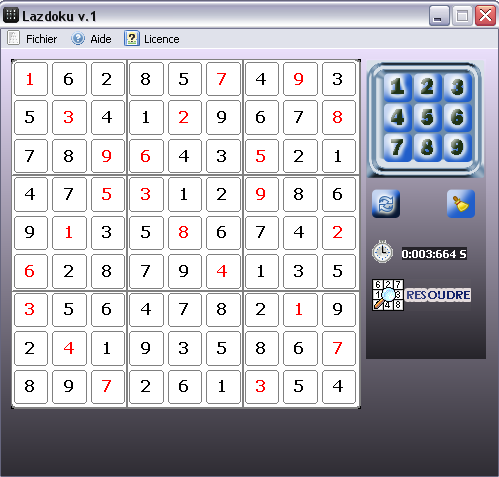
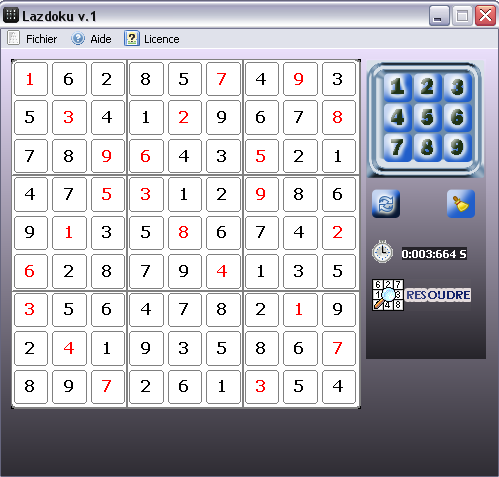

Aperçu

LazDoku v.1 est un solveur de grille de sudoku permttant de resoudre des grilles de n'importe quelle difficulté.
Conçu pour le deuxieme defi dans la section Pascal du forum de developpez.com.
Le but de ce defi est de réaliser un solveur de grille de sudoku en pascal avec le RAD Lazarus.

Lazdoku peut etre utilisé pour résoudre des grilles de sudoku, allant des plus simples aux grilles diaboliques. La difficulté de la grille peut etre connue à partir du temps que prend lazdoku pour resoudre la grille.
Mais LazDoku peut aussi etre utilisé pour s'amuser à résourdre des grilles de sudoku. Muni d'un petit clavier virtuel (Vous pouvez toujours utiliser le clavier de votre ordinateur), permettant la saisie des chiffres dans les grilles(aussi bien des candidats possibles pour une case), peut devenir votre logiciel favoris pour jouer au jeu sudoku. Une partie non terminée peut etre enregistrée puis reprise plutard. La grille enregistrée peut être charger depuis le menu "fichier", ou par simple glisser/deposer. Enfin, Vous pouver utiliser le bouton résourdre pour verifier la grille.